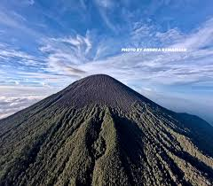

GUNUNG PRAU

Gunung Prau, yang terletak di Dataran Tinggi Dieng, Jawa Tengah (2.565–2.590 mdpl), adalah destinasi populer untuk pendaki pemula karena jalurnya yang relatif mudah dan singkat (2-3 jam). Gunung ini terkenal dengan julukan "Gunung Sejuta Umat," serta pemandangan sunrise menakjubkan, padang savana, dan Bukit Teletubbies.
- VIA PATAK BANTENG : MAPS
- VIA KALI LEMBU : MAPS
- VIA DIENG : MAPS
- VIA DIENG KULON / DARAWATI ⭐ : MAPS
TINGKAT KESULITAN
- PATAK BANTENG: 4,5/10
- KALI EMBU: 4,75/10
- DIENG: 5/10
- DARAWATI: 3/10
FUN FACT:
Gunung Prau adalah destinasi favorit pemula karena hanya butuh waktu 2-3 jam untuk mencapai puncaknya yang unik berbentuk perahu terbalik. Di atas, kamu akan disuguhi fenomena Golden Sunrise terbaik di Asia Tenggara, hamparan Bukit Teletubbies, serta padang bunga Daisy yang menawan. Saat musim kemarau, suhu ekstrem di sini bisa menciptakan embun es (upas) dan pemandangan bintang Milky Way yang sangat jelas terlihat dengan mata telanjang.
GUNUNG SEMERU

Gunung Semeru (3.676 mdpl) adalah gunung tertinggi di Pulau Jawa dan salah satu yang paling aktif secara vulkanik di Indonesia. Terletak di Taman Nasional Bromo Tengger Semeru, Jawa Timur, gunung ini menjadi simbol petualangan sejati bagi para pendaki. Puncaknya dikenal sebagai Mahameru — atap Pulau Jawa.
FUN FACT:
Semeru adalah gunung berapi aktif yang terus menerus mengeluarkan abu vulkanik dari kawah Jonggring Saloko. Jalur pendakiannya melewati Danau Ranu Kumbolo yang memukau, padang bunga edelweiss, serta tanjakan cinta yang legendaris di kalangan pendaki Indonesia.
GUNUNG MERAPI

Gunung Merapi (2.930 mdpl) adalah salah satu gunung berapi paling aktif di dunia. Terletak di perbatasan Jawa Tengah dan Yogyakarta, gunung ini memiliki daya tarik luar biasa dengan pemandangan kawah aktif dan lahar beku yang dramatis. Setiap letusan besarnya selalu menjadi peristiwa bersejarah.
- VIA SELO (BOYOLALI) : MAPS
- VIA BALERANTE : MAPS
TINGKAT KESULITAN
- SELO: 7/10
- BALERANTE: 7,5/10
FUN FACT:
Nama Merapi berasal dari kata "Meru" (gunung) dan "api". Gunung ini dianggap keramat oleh masyarakat Jawa. Pendakian ke puncak Garuda menawarkan pengalaman melihat kawah aktif dari jarak dekat yang tak terlupakan.
GUNUNG MERBABU

Gunung Merbabu (3.145 mdpl) adalah gunung berapi strato yang terletak di Jawa Tengah. Dikenal dengan padang sabana luas dan pemandangan puncak ganda yang indah, Merbabu menjadi favorit para pendaki yang ingin menikmati keindahan alam terbuka Jawa Tengah.
TINGKAT KESULITAN
- SELO: 6,5/10
- SUWANTING: 7/10
- WEKAS: 6/10
FUN FACT:
Merbabu memiliki dua puncak utama yaitu Kenteng Songo dan Triangulasi. Padang sabana di jalur Selo menjadi spot foto yang paling viral di media sosial pendaki Indonesia, terutama saat golden hour.
GUNUNG LOKON

Gunung Lokon (1.580 mdpl) adalah gunung berapi aktif yang terletak di dekat Kota Tomohon, Sulawesi Utara. Gunung ini sering mengeluarkan asap dari kawah Tompaluan yang berada di antara Lokon dan Gunung Empung. Menjadi ikon kota Tomohon yang Indah.
FUN FACT:
Lokon merupakan salah satu gunung berapi paling aktif di Sulawesi Utara. Pemandangan dari puncaknya menawarkan panorama Kota Tomohon dan Danau Tondano yang menakjubkan di antara kabut pagi hari.
GUNUNG KLABAT

Gunung Klabat (1.995 mdpl) adalah gunung tertinggi di Sulawesi Utara. Terletak di Kabupaten Minahasa Utara, gunung ini menawarkan jalur pendakian yang menantang melalui hutan tropis lebat dengan keanekaragaman hayati yang sangat tinggi.
FUN FACT:
Gunung Klabat adalah habitat beberapa spesies endemik Sulawesi, termasuk berbagai jenis burung dan mamalia langka. Dari puncaknya, pendaki bisa menikmati pemandangan Selat Maluku dan siluet Pulau Ternate.
GUNUNG DEMPO

Gunung Dempo (3.159 mdpl) adalah gunung tertinggi di Sumatera Selatan. Terletak di dekat Kota Pagaralam, gunung ini menawarkan pemandangan perkebunan teh yang hijau dan kawah aktif berwarna biru kehijauan di puncaknya yang memukau.
FUN FACT:
Kawah Dempo berwarna biru kehijauan akibat aktivitas vulkanik. Gunung ini dikelilingi perkebunan teh Pagaralam yang terkenal sebagai salah satu penghasil teh terbaik di Sumatera Selatan.
GUNUNG SINABUNG

Gunung Sinabung (2.460 mdpl) di Sumatera Utara adalah gunung berapi yang kembali aktif setelah ribuan tahun tidur. Sejak 2010 hingga kini, Sinabung terus menunjukkan aktivitas vulkanik yang intens dengan luncuran awan panas yang spektakuler namun berbahaya.
- ⚠️ JALUR DITUTUP (STATUS AKTIF)
FUN FACT:
Sinabung sempat tidak aktif selama lebih dari 400 tahun sebelum tiba-tiba meletus pada 2010. Aktivitas vulkaniknya yang terus-menerus memaksa ribuan warga mengungsi dari desa-desa di sekitarnya hingga kini.
GUNUNG KERINCI

Gunung Kerinci (3.805 mdpl) adalah gunung berapi tertinggi di Indonesia dan puncak tertinggi di Sumatera. Terletak di Taman Nasional Kerinci Seblat, gunung ini dikelilingi hutan lebat yang menjadi habitat Harimau Sumatera dan bunga Rafflesia yang langka.
FUN FACT:
Kerinci adalah gunung berapi aktif tertinggi di Asia Tenggara. Dari puncaknya di hari cerah, pendaki bisa menyaksikan hamparan luas hingga Samudera Hindia. Di sekitarnya tumbuh kebun teh Kayu Aro yang tersohor.
GUNUNG BROMO

Gunung Bromo (2.329 mdpl) adalah gunung berapi aktif paling terkenal di Indonesia. Terletak di Taman Nasional Bromo Tengger Semeru, Jawa Timur, Bromo menawarkan pemandangan lautan pasir yang luar biasa dan sunrise spektakuler dari Penanjakan yang memukau jutaan wisatawan setiap tahunnya.
- VIA CEMORO LAWANG : MAPS
- VIA PENANJAKAN : MAPS
TINGKAT KESULITAN
- CEMORO LAWANG: 3/10
- PENANJAKAN: 2/10
FUN FACT:
Kawah Bromo terus mengeluarkan asap belerang sepanjang waktu. Setiap tahun, suku Tengger mengadakan upacara Yadnya Kasada di mana mereka melemparkan sesaji berupa hasil bumi ke dalam kawah Bromo sebagai bentuk rasa syukur.
GUNUNG LATIMOJONG

Gunung Latimojong (3.478 mdpl) adalah puncak tertinggi di Sulawesi, terletak di Kabupaten Enrekang, Sulawesi Selatan. Gunung ini dikenal sebagai salah satu seven summits Indonesia yang paling menantang dengan medan hutan lebat yang panjang.
FUN FACT:
Latimojong adalah bagian dari Seven Summits Indonesia. Jalurnya yang panjang dan medan yang berat menjadikannya tantangan luar biasa bahkan bagi pendaki berpengalaman. Di puncak Rante Mario, panorama Sulawesi Selatan membentang tak terbatas.
PUNCAK JAYA (CARSTENSZ)

Puncak Jaya atau Carstensz Pyramid (4.884 mdpl) adalah puncak tertinggi di Indonesia, Papua. Salah satu dari Seven Summits dunia, puncak ini memiliki salju abadi yang kini semakin menyusut akibat pemanasan global. Pendakian ini membutuhkan teknik mountaineering dan pemanjatan teknis khusus.
- VIA SUGAPA (JALUR RIMBA) : MAPS
- VIA HELIKOPTER : MAPS
TINGKAT KESULITAN
- SUGAPA: 10/10
- HELIKOPTER: 9/10
FUN FACT:
Carstensz Pyramid adalah satu-satunya puncak Seven Summits yang berada di zona tropis dengan salju abadi. Pemanjatan teknis via ferrata menjadi tantangan utama di jalur normal menuju puncak tertinggi Indonesia ini.